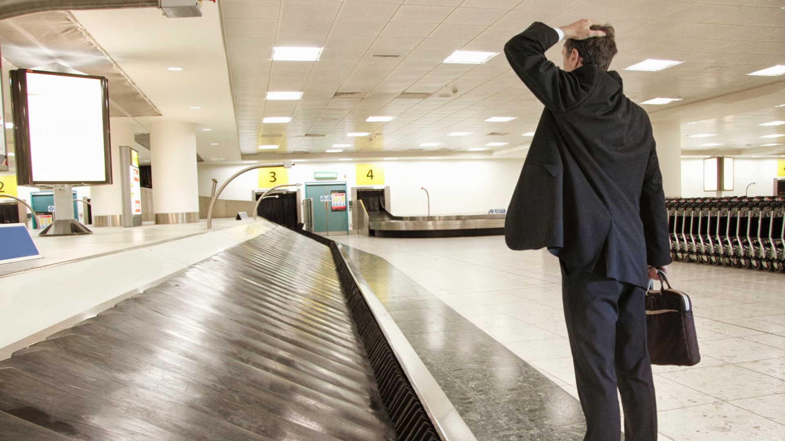

EXTRAVIO E PERDA
Uma vez despachada a bagagem, a companhia aérea se responsabiliza pela falha na prestação do serviço, gerando indenização pelos danos causados.
Importante guardar o comprovante do despacho de bagagem junto à companhia aérea. Recomenda-se efetuar reclamação, preferencialmente, após verificar a ocorrência da situação, ou seja, normalmente ainda no terminal de desembarque.
Caso não seja feito de imediato, o passageiro possui o prazo de até 15 (quinze) dias para efetuar a reclamação junto à companhia aérea, chamado de RIB – Registro de Irregularidade de Bagagem, com informações de data do ocorrido.
Havendo a localização, a companhia deve devolver a bagagem no endereço indicado pelo passageiro.
A bagagem é considerada extraviada se não for encontrada, para voos nacionais, em 30 dias, e para voos internacionais, em 21 dias. Não localizada dentro desses prazos, a bagagem passa a ser considerada perdida.

Durante todo o período em que o passageiro ficou sem a bagagem, a empresa aérea é obrigada a custear os gastos.
Por isso, lembre-se de efetuar gastos proporcionais e razoáveis com os itens semelhantes aos despachados, devendo, ainda, guardar todos os recibos e/ou notas-fiscais do prejuízo.
Importante registrar que, mesmo que localizada a bagagem, é possível pleitear indenização por danos materiais e morais, em razão de todo ocorrido.
DANOS/AVARIAS DE BABAGEM
Em caso de danos e avarias, deve-se efetuar reclamação, preferencialmente, após verificar a ocorrência dos danos. Caso não seja feito de imediato, o passageiro tem prazo máximo de 07 (sete) dias.
Quando for retirar as bagagens dos terminais, além de efetuar, em caso de necessidade, o registro fotográfico, recomenda-se conferir o objeto, visando que as companhias aéreas não responsabilizem o próprio passageiro.
FURTO DE BABAGENS
Da mesma forma, caso o passageiro, ao retirar as bagagens no terminal do aeroporto, verifique que os objetos no interior das bagagens foram furtados, deve-se efetuar reclamação, relatando todo o ocorrido.
Deve-se guardar os recibos de compra e/ou notas-fiscais dos pertences depositados na bagagem, com objetivo de reivindicar indenização por danos materiais.